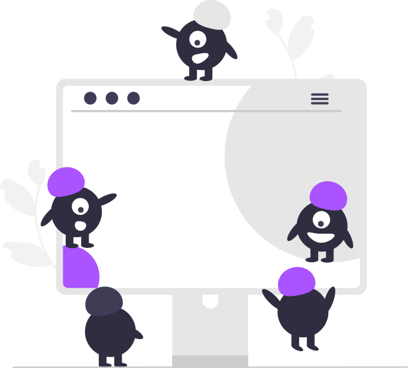
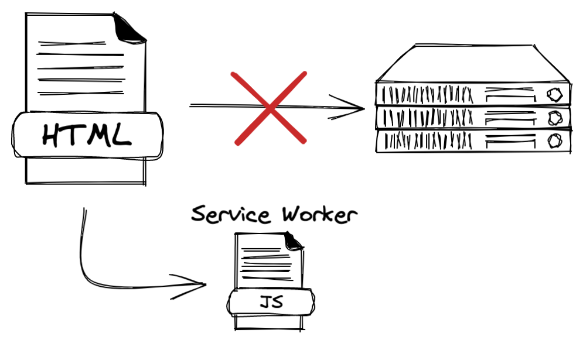
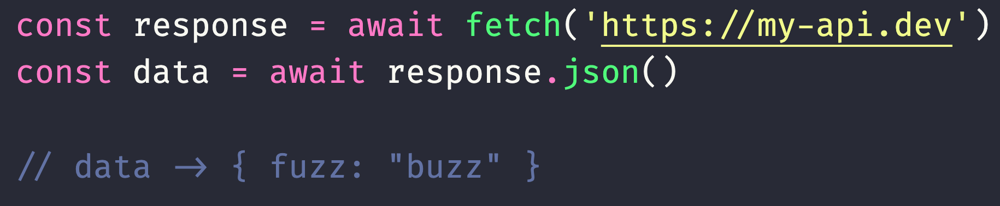
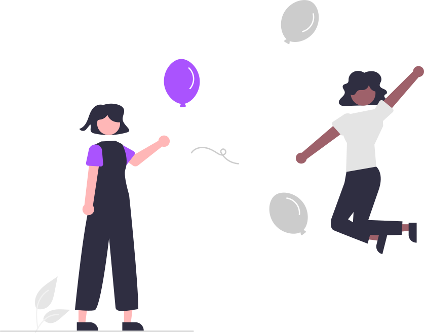
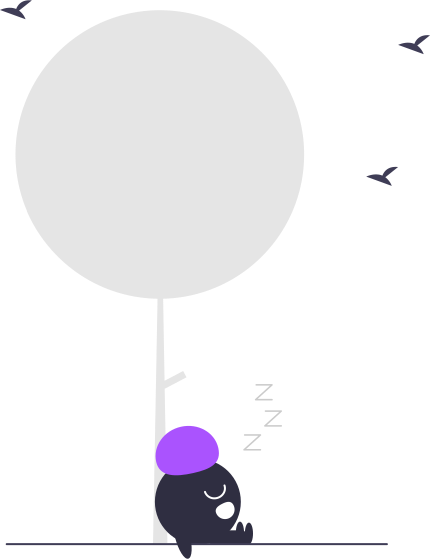
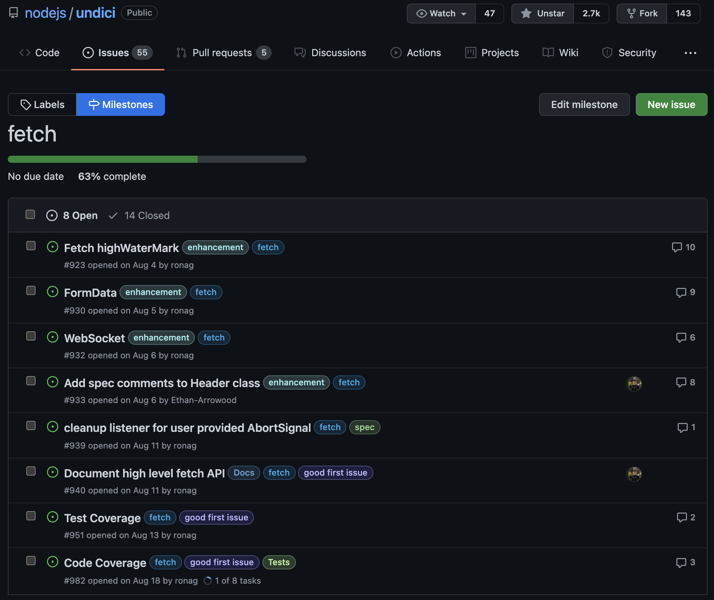

Making Fetch Happen
Ethan Arrowood
Twitter: @ArrowoodTech
GitHub: @Ethan-Arrowood
XMLHttpRequest
AJAX
Asynchronous JavaScript and XML
XHR Specification
https://xhr.spec.whatwg.org
WHATWG
Web Hypertext Application Technology Working Group
W3C
World Wide Web Consortium
Service Workers

https://w3c.github.io/ServiceWorker/
Programmable network proxy

Better Networking Interfaces
Fetch

- Modern async patterns
- Class based networking interfaces
- Based on existing CORS standard
CORS
Cross-Origin Resource Sharing
https://www.w3.org/TR/2014/REC-cors-20140116/

Isomorphic JavaScript
function sumArray (arr) {
return arr.reduce((s, c) => s += c, 0)
}
sumArray([1, 2, 3]) // -> 6
const button = document.getElementById('button')
button.onclick = () => {
console.log('Hello, World!')
}
// Browser -> No issue!
// Node.js -> Uncaught ReferenceError: document is not defined
Progressive Web Applications

Node.js
import { request } from 'http'
added in v0.3.6
- request
- got
- axios
- node-fetch
- ...

https://xkcd.com/927/
Simplicity
import got from 'got'
const response = await got('https://sindresorhus.com')
response.body // -> '<!doctype html> ...'
https://github.com/sindresorhus/got
Efficiency
import { stream } from 'undici'
import { Writable } from 'stream'
const bufs = []
await stream(
'https://undici.nodejs.org',
{ method: 'GET', opaque: { bufs } },
({ opaque: { bufs } }) =>
new Writable({
write (c, _, cb) {
bufs.push(c)
cb()
}
})
)
console.log(Buffer.concat(bufs).toString('utf-8'))
// -> '<!doctype html> ...'
https://undici.nodejs.org
Familiarity
import fetch from 'node-fetch'
const response = await fetch('https://github.com/');
const body = await response.text();
console.log(body);
// -> '<!doctype html> ...'
https://github.com/node-fetch/node-fetch
Fetch & Node.js
Timeline
- (2014) github/fetch
- (2014) matthew-andrews/isomorphic-fetch
- (2015) node-fetch/node-fetch
- (2017) npm/make-fetch-happen
- (2017) lquixada/cross-fetch
- (2018) Add fetch to Node.js nodejs/node #19393
- (2019) npm/minipass-fetch
- (2019) node-fetch vendored into Node.js nodejs/node #27979
- (2020) ethan-arrowood/undici-fetch
- (2021) undici-fetch ported to undicinodejs/undici #912
Node.js is hard at work implementing WHATWG APIs
- URL (added in v6.13.0/v7.0.0)
- EventTarget (added in v14.5.0; non-experimental in v15.4.0)
- AbortController (added in v14.17.0; non-experimental in v15.4.0)
- Web Streams (added in v16.5.0; currently experimental)
- structureClone (added in v17.0.0 as non-experimental)
There are many more too; these are just the ones immediately relevant for Fetch

Thank You Contributors ❤️
You can help!
-
Try out undici fetch
- Drop in replacement for node-fetch
- Contribute to undici and Node.js
- More isomorphic JavaScript
Thank You!
Ethan Arrowood
Twitter: @ArrowoodTech
GitHub: @Ethan-Arrowood